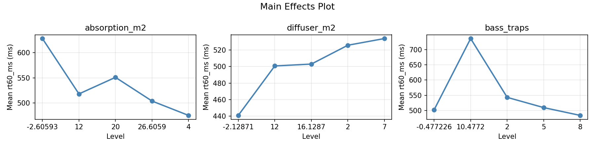
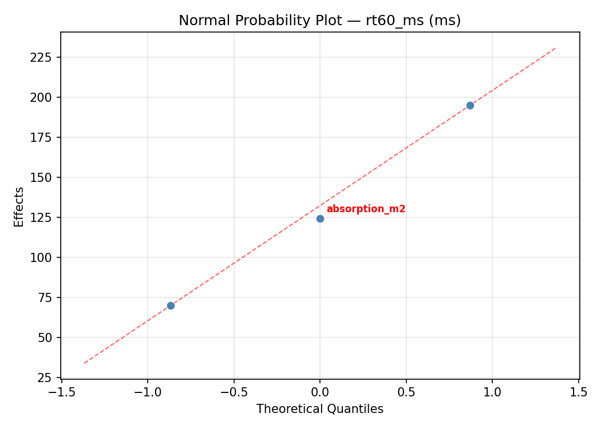
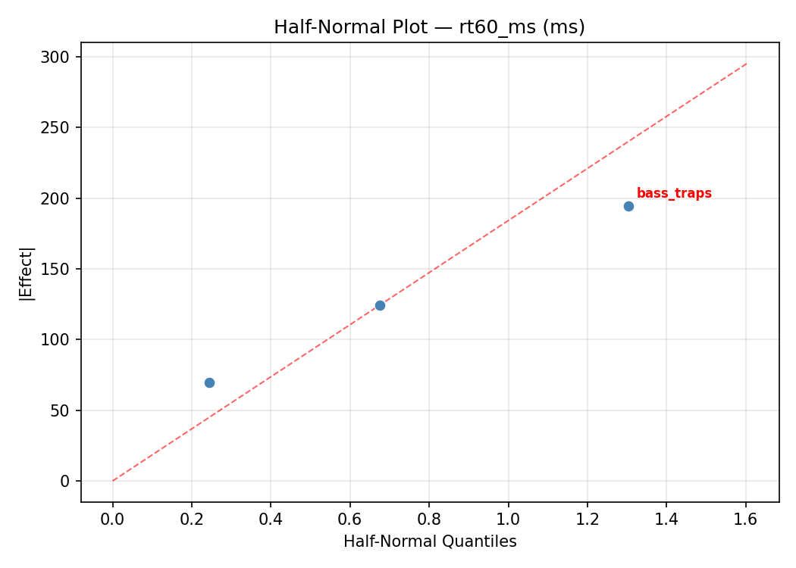
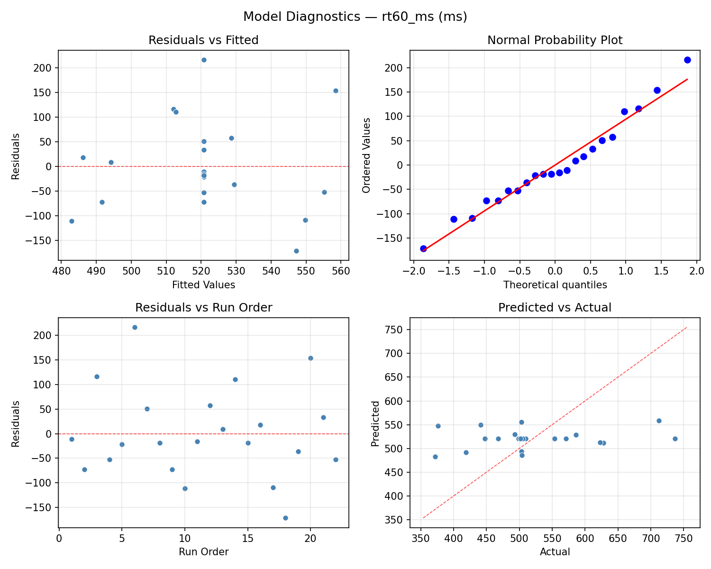
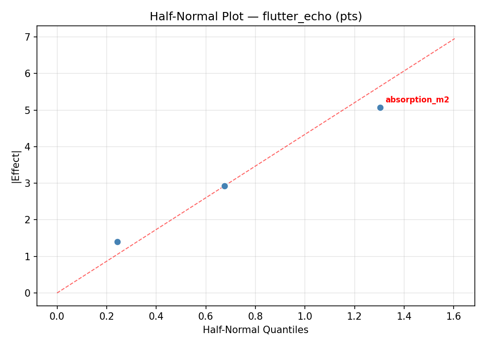
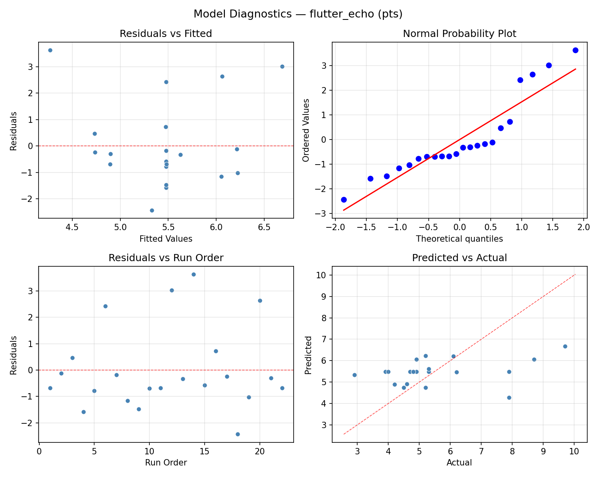
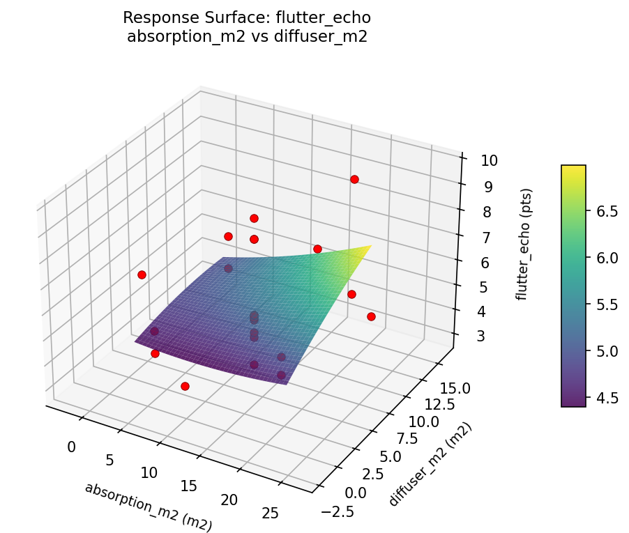
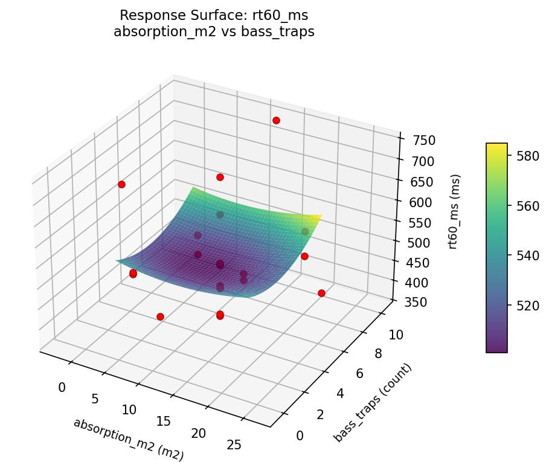
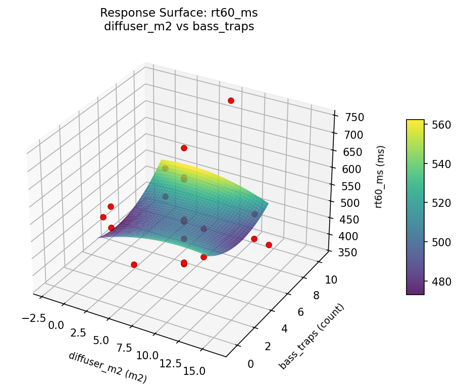

Summary
This experiment investigates room acoustics treatment. Central composite design to optimize RT60 reverb time and minimize flutter echo by tuning absorption panel area, diffuser coverage, and bass trap count.
The design varies 3 factors: absorption m2 (m2), ranging from 4 to 20, diffuser m2 (m2), ranging from 2 to 12, and bass traps (count), ranging from 2 to 8. The goal is to optimize 2 responses: rt60 ms (ms) (minimize) and flutter echo (pts) (minimize). Fixed conditions held constant across all runs include room m3 = 50, purpose = mixing_studio.
A Central Composite Design (CCD) was selected to fit a full quadratic response surface model, including curvature and interaction effects. With 3 factors this produces 22 runs including center points and axial (star) points that extend beyond the factorial range.
Quadratic response surface models were fitted to capture potential curvature and factor interactions. The RSM contour plots below visualize how pairs of factors jointly affect each response.
Key Findings
For rt60 ms, the most influential factors were diffuser m2 (43.2%), bass traps (32.1%), absorption m2 (24.8%). The best observed value was 372.0 (at absorption m2 = 4, diffuser m2 = 2, bass traps = 8).
For flutter echo, the most influential factors were bass traps (41.1%), diffuser m2 (41.1%), absorption m2 (17.9%). The best observed value was 2.9 (at absorption m2 = 12, diffuser m2 = 7, bass traps = 10.4772).
Recommended Next Steps
- Run confirmation experiments at the predicted optimal settings to validate the model.
- Consider whether any fixed factors should be varied in a future study.
Experimental Setup
Factors
| Factor | Low | High | Unit |
|---|
absorption_m2 | 4 | 20 | m2 |
diffuser_m2 | 2 | 12 | m2 |
bass_traps | 2 | 8 | count |
Fixed: room_m3 = 50, purpose = mixing_studio
Responses
| Response | Direction | Unit |
|---|
rt60_ms | ↓ minimize | ms |
flutter_echo | ↓ minimize | pts |
Configuration
{
"metadata": {
"name": "Room Acoustics Treatment",
"description": "Central composite design to optimize RT60 reverb time and minimize flutter echo by tuning absorption panel area, diffuser coverage, and bass trap count"
},
"factors": [
{
"name": "absorption_m2",
"levels": [
"4",
"20"
],
"type": "continuous",
"unit": "m2"
},
{
"name": "diffuser_m2",
"levels": [
"2",
"12"
],
"type": "continuous",
"unit": "m2"
},
{
"name": "bass_traps",
"levels": [
"2",
"8"
],
"type": "continuous",
"unit": "count"
}
],
"fixed_factors": {
"room_m3": "50",
"purpose": "mixing_studio"
},
"responses": [
{
"name": "rt60_ms",
"optimize": "minimize",
"unit": "ms"
},
{
"name": "flutter_echo",
"optimize": "minimize",
"unit": "pts"
}
],
"settings": {
"operation": "central_composite",
"test_script": "use_cases/158_room_acoustics/sim.sh"
}
}
Experimental Matrix
The Central Composite Design produces 22 runs. Each row is one experiment with specific factor settings.
| Run | absorption_m2 | diffuser_m2 | bass_traps |
|---|
| 1 | 12 | 7 | 5 |
| 2 | 20 | 2 | 8 |
| 3 | 4 | 12 | 2 |
| 4 | 12 | 16.1287 | 5 |
| 5 | 12 | 7 | 5 |
| 6 | -2.60593 | 7 | 5 |
| 7 | 12 | 7 | -0.477226 |
| 8 | 12 | 7 | 5 |
| 9 | 20 | 12 | 2 |
| 10 | 26.6059 | 7 | 5 |
| 11 | 12 | 7 | 5 |
| 12 | 12 | -2.12871 | 5 |
| 13 | 12 | 7 | 5 |
| 14 | 4 | 2 | 8 |
| 15 | 12 | 7 | 5 |
| 16 | 20 | 2 | 2 |
| 17 | 12 | 7 | 10.4772 |
| 18 | 20 | 12 | 8 |
| 19 | 12 | 7 | 5 |
| 20 | 4 | 2 | 2 |
| 21 | 4 | 12 | 8 |
| 22 | 12 | 7 | 5 |
Step-by-Step Workflow
1
Preview the design
$ doe info --config use_cases/158_room_acoustics/config.json
2
Generate the runner script
$ doe generate --config use_cases/158_room_acoustics/config.json \
--output use_cases/158_room_acoustics/results/run.sh --seed 42
3
Execute the experiments
$ bash use_cases/158_room_acoustics/results/run.sh
4
Analyze results
$ doe analyze --config use_cases/158_room_acoustics/config.json
5
Get optimization recommendations
$ doe optimize --config use_cases/158_room_acoustics/config.json
6
Multi-objective optimization
With 2 competing responses, use --multi to find the best compromise via Derringer–Suich desirability.
$ doe optimize --config use_cases/158_room_acoustics/config.json --multi
7
Generate the HTML report
$ doe report --config use_cases/158_room_acoustics/config.json \
--output use_cases/158_room_acoustics/results/report.html
Features Exercised
| Feature | Value |
|---|
| Design type | central_composite |
| Factor types | continuous (all 3) |
| Arg style | double-dash |
| Responses | 2 (rt60_ms ↓, flutter_echo ↓) |
| Total runs | 22 |
Analysis Results
Generated from actual experiment runs using the DOE Helper Tool.
Response: rt60_ms
Top factors: diffuser_m2 (43.2%), bass_traps (32.1%), absorption_m2 (24.8%).
ANOVA
| Source | DF | SS | MS | F | p-value |
|---|
| Source | DF | SS | MS | F | p-value |
| absorption_m2 | 4 | 29040.4470 | 7260.1117 | 1.520 | 0.2758 |
| diffuser_m2 | 4 | 82082.4470 | 20520.6117 | 4.296 | 0.0323 |
| bass_traps | 4 | 50967.9470 | 12741.9867 | 2.668 | 0.1020 |
| Lack | of | Fit | 2 | 0.0000 | 0.0000 |
| Pure | Error | 7 | 33434.8750 | | |
| Error | 9 | 22183.5227 | 4776.4107 | | |
| Total | 21 | 184274.3636 | 8774.9697 | | |
Pareto Chart

Main Effects Plot

Normal Probability Plot of Effects

Half-Normal Plot of Effects

Model Diagnostics

Response: flutter_echo
Top factors: bass_traps (41.1%), diffuser_m2 (41.1%), absorption_m2 (17.9%).
ANOVA
| Source | DF | SS | MS | F | p-value |
|---|
| Source | DF | SS | MS | F | p-value |
| absorption_m2 | 4 | 4.4120 | 1.1030 | 1.156 | 0.3912 |
| diffuser_m2 | 4 | 15.4486 | 3.8622 | 4.048 | 0.0379 |
| bass_traps | 4 | 17.1520 | 4.2880 | 4.494 | 0.0286 |
| Lack | of | Fit | 2 | 14.7073 | 7.3537 |
| Pure | Error | 7 | 6.6787 | | |
| Error | 9 | 21.3861 | 0.9541 | | |
| Total | 21 | 58.3986 | 2.7809 | | |
Pareto Chart

Main Effects Plot

Normal Probability Plot of Effects

Half-Normal Plot of Effects

Model Diagnostics

Response Surface Plots
3D surfaces fitted with quadratic RSM. Red dots are observed data points.
flutter echo absorption m2 vs bass traps

flutter echo absorption m2 vs diffuser m2

flutter echo diffuser m2 vs bass traps

rt60 ms absorption m2 vs bass traps

rt60 ms absorption m2 vs diffuser m2

rt60 ms diffuser m2 vs bass traps

Multi-Objective Optimization
When responses compete, Derringer–Suich desirability finds the best compromise.
Each response is scaled to a 0–1 desirability, then combined via a weighted geometric mean.
Overall Desirability
D = 0.9505
Per-Response Desirability
| Response | Weight | Desirability | Predicted | Dir |
|---|
rt60_ms |
1.0 |
|
376.00 0.9446 376.00 ms |
↓ |
flutter_echo |
1.5 |
|
2.90 0.9545 2.90 pts |
↓ |
Recommended Settings
| Factor | Value |
|---|
absorption_m2 | 12 m2 |
diffuser_m2 | 7 m2 |
bass_traps | 5 count |
Source: from observed run #18
Trade-off Summary
Sacrifice = how much worse than single-objective best.
| Response | Predicted | Best Observed | Sacrifice |
|---|
flutter_echo | 2.90 | 2.90 | +0.00 |
Top 3 Runs by Desirability
| Run | D | Factor Settings |
|---|
| #10 | 0.8461 | absorption_m2=12, diffuser_m2=7, bass_traps=5 |
| #9 | 0.7903 | absorption_m2=20, diffuser_m2=2, bass_traps=2 |
Model Quality
| Response | R² | Type |
|---|
flutter_echo | 0.2305 | linear |
Full Multi-Objective Output
============================================================
MULTI-OBJECTIVE OPTIMIZATION
Method: Derringer-Suich Desirability Function
============================================================
Overall desirability: D = 0.9505
Response Weight Desirability Predicted Direction
---------------------------------------------------------------------
rt60_ms 1.0 0.9446 376.00 ms ↓
flutter_echo 1.5 0.9545 2.90 pts ↓
Recommended settings:
absorption_m2 = 12 m2
diffuser_m2 = 7 m2
bass_traps = 5 count
(from observed run #18)
Trade-off summary:
rt60_ms: 376.00 (best observed: 372.00, sacrifice: +4.00)
flutter_echo: 2.90 (best observed: 2.90, sacrifice: +0.00)
Model quality:
rt60_ms: R² = 0.0514 (linear)
flutter_echo: R² = 0.2305 (linear)
Top 3 observed runs by overall desirability:
1. Run #18 (D=0.9505): absorption_m2=12, diffuser_m2=7, bass_traps=5
2. Run #10 (D=0.8461): absorption_m2=12, diffuser_m2=7, bass_traps=5
3. Run #9 (D=0.7903): absorption_m2=20, diffuser_m2=2, bass_traps=2
Full Analysis Output
=== Main Effects: rt60_ms ===
Factor Effect Std Error % Contribution
--------------------------------------------------------------
diffuser_m2 235.4167 19.9715 43.2%
bass_traps 175.0000 19.9715 32.1%
absorption_m2 135.0000 19.9715 24.8%
=== ANOVA Table: rt60_ms ===
Source DF SS MS F p-value
-----------------------------------------------------------------------------
absorption_m2 4 29040.4470 7260.1117 1.520 0.2758
diffuser_m2 4 82082.4470 20520.6117 4.296 0.0323
bass_traps 4 50967.9470 12741.9867 2.668 0.1020
Lack of Fit 2 0.0000 0.0000 0.000 1.0000
Pure Error 7 33434.8750 4776.4107
Error 9 22183.5227 4776.4107
Total 21 184274.3636 8774.9697
=== Summary Statistics: rt60_ms ===
absorption_m2:
Level N Mean Std Min Max
------------------------------------------------------------
-2.60593 1 504.0000 0.0000 504.0000 504.0000
12 12 499.0833 98.7361 372.0000 712.0000
20 4 576.0000 109.6814 503.0000 737.0000
26.6059 1 441.0000 0.0000 441.0000 441.0000
4 4 554.5000 63.0000 502.0000 628.0000
diffuser_m2:
Level N Mean Std Min Max
------------------------------------------------------------
-2.12871 1 712.0000 0.0000 712.0000 712.0000
12 4 538.0000 39.3277 502.0000 586.0000
16.1287 1 503.0000 0.0000 503.0000 503.0000
2 4 592.5000 113.0501 502.0000 737.0000
7 12 476.5833 73.3676 372.0000 623.0000
bass_traps:
Level N Mean Std Min Max
------------------------------------------------------------
-0.477226 1 623.0000 0.0000 623.0000 623.0000
10.4772 1 448.0000 0.0000 448.0000 448.0000
2 4 594.7500 100.9534 502.0000 737.0000
5 12 488.5833 91.1277 372.0000 712.0000
8 4 535.7500 61.6029 502.0000 628.0000
=== Main Effects: flutter_echo ===
Factor Effect Std Error % Contribution
--------------------------------------------------------------
bass_traps 3.9000 0.3555 41.1%
diffuser_m2 3.9000 0.3555 41.1%
absorption_m2 1.7000 0.3555 17.9%
=== ANOVA Table: flutter_echo ===
Source DF SS MS F p-value
-----------------------------------------------------------------------------
absorption_m2 4 4.4120 1.1030 1.156 0.3912
diffuser_m2 4 15.4486 3.8622 4.048 0.0379
bass_traps 4 17.1520 4.2880 4.494 0.0286
Lack of Fit 2 14.7073 7.3537 7.707 0.0170
Pure Error 7 6.6787 0.9541
Error 9 21.3861 0.9541
Total 21 58.3986 2.7809
=== Summary Statistics: flutter_echo ===
absorption_m2:
Level N Mean Std Min Max
------------------------------------------------------------
-2.60593 1 6.2000 0.0000 6.2000 6.2000
12 12 5.2083 1.6610 2.9000 8.7000
20 4 5.6500 1.5286 4.6000 7.9000
26.6059 1 4.5000 0.0000 4.5000 4.5000
4 4 6.1750 2.3543 4.9000 9.7000
diffuser_m2:
Level N Mean Std Min Max
------------------------------------------------------------
-2.12871 1 8.7000 0.0000 8.7000 8.7000
12 4 6.0000 2.4698 4.6000 9.7000
16.1287 1 4.8000 0.0000 4.8000 4.8000
2 4 5.8250 1.3937 4.9000 7.9000
7 12 4.9750 1.3081 2.9000 7.9000
bass_traps:
Level N Mean Std Min Max
------------------------------------------------------------
-0.477226 1 7.9000 0.0000 7.9000 7.9000
10.4772 1 4.0000 0.0000 4.0000 4.0000
2 4 6.7750 2.4541 4.6000 9.7000
5 12 5.1083 1.4463 2.9000 8.7000
8 4 5.0500 0.2380 4.8000 5.3000
Optimization Recommendations
=== Optimization: rt60_ms ===
Direction: minimize
Best observed run: #10
absorption_m2 = 4
diffuser_m2 = 2
bass_traps = 8
Value: 372.0
RSM Model (linear, R² = 0.0491, Adj R² = -0.1094):
Coefficients:
intercept +520.7273
absorption_m2 +10.5243
diffuser_m2 +1.3596
bass_traps -22.4627
RSM Model (quadratic, R² = 0.6917, Adj R² = 0.4605):
Coefficients:
intercept +522.5957
absorption_m2 +10.5244
diffuser_m2 +1.3596
bass_traps -22.4629
absorption_m2*diffuser_m2 +7.7500
absorption_m2*bass_traps -3.2500
diffuser_m2*bass_traps +23.0000
absorption_m2^2 +56.8660
diffuser_m2^2 -22.7842
bass_traps^2 -36.8844
Curvature analysis:
absorption_m2 coef=+56.8660 convex (has a minimum)
bass_traps coef=-36.8844 concave (has a maximum)
diffuser_m2 coef=-22.7842 concave (has a maximum)
Notable interactions:
diffuser_m2*bass_traps coef=+23.0000 (synergistic)
absorption_m2*diffuser_m2 coef=+7.7500 (synergistic)
absorption_m2*bass_traps coef=-3.2500 (antagonistic)
Predicted optimum (from quadratic model, at observed points):
absorption_m2 = 26.6059
diffuser_m2 = 7
bass_traps = 5
Predicted value: 731.3628
Surface optimum (via L-BFGS-B, quadratic model):
absorption_m2 = 12.0335
diffuser_m2 = 2
bass_traps = 8
Predicted value: 416.1036
Model quality: Moderate fit — use predictions directionally, not precisely.
Factor importance:
1. absorption_m2 (effect: 252.5, contribution: 46.6%)
2. bass_traps (effect: 170.3, contribution: 31.4%)
3. diffuser_m2 (effect: 119.5, contribution: 22.0%)
=== Optimization: flutter_echo ===
Direction: minimize
Best observed run: #18
absorption_m2 = 12
diffuser_m2 = 7
bass_traps = 10.4772
Value: 2.9
RSM Model (linear, R² = 0.1083, Adj R² = -0.0403):
Coefficients:
intercept +5.4773
absorption_m2 +0.3587
diffuser_m2 +0.3515
bass_traps -0.4233
RSM Model (quadratic, R² = 0.5629, Adj R² = 0.2350):
Coefficients:
intercept +5.6220
absorption_m2 +0.3587
diffuser_m2 +0.3515
bass_traps -0.4233
absorption_m2*diffuser_m2 +0.4250
absorption_m2*bass_traps -0.2750
diffuser_m2*bass_traps -0.2250
absorption_m2^2 +0.7026
diffuser_m2^2 -0.1674
bass_traps^2 -0.7524
Curvature analysis:
bass_traps coef=-0.7524 concave (has a maximum)
absorption_m2 coef=+0.7026 convex (has a minimum)
diffuser_m2 coef=-0.1674 concave (has a maximum)
Notable interactions:
absorption_m2*diffuser_m2 coef=+0.4250 (synergistic)
Predicted optimum (from quadratic model, at observed points):
absorption_m2 = 26.6059
diffuser_m2 = 7
bass_traps = 5
Predicted value: 8.6190
Surface optimum (via L-BFGS-B, quadratic model):
absorption_m2 = 13.9431
diffuser_m2 = 2
bass_traps = 8
Predicted value: 4.1110
Model quality: Moderate fit — use predictions directionally, not precisely.
Factor importance:
1. absorption_m2 (effect: 4.0, contribution: 47.1%)
2. bass_traps (effect: 3.1, contribution: 36.6%)
3. diffuser_m2 (effect: 1.4, contribution: 16.3%)